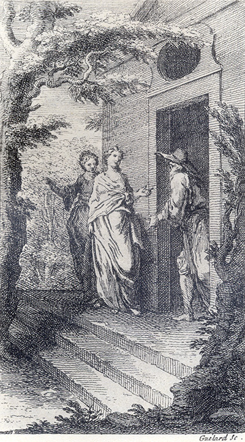

L'Astrée d'Honoré d'Urfé
Quatrième partie
Livre 5

).
Gravure signée Guélard.
Léonide et Silvie chez Climanthe.
(Les nymphes sont pieds nus et le faux druide chaussé
IV. Édition Vaganay**, 1925, 1.
L'AstréeL'Astrée
Gravure signée Guélard.
Léonide et Silvie chez Climanthe.
(Les nymphes sont pieds nus et le faux druide chaussé
(Voir Illustrations)
Damon et Madonthe avec tout l'honneur qu'elles purent. Et Adamas, faisant porter le Chevalier dans une chambre la plus commode que l'on pût choisir, quantité de Chirurgiens l'y vinrent incontinent visiter, qui ne l'abandonnèrent qu'il ne fût entièrement guéri. Quant à Madonthe, elle fut logée en une chambre assez près de celle de Damon, à laquelle Amasis fut présenter des habits semblables à ceux que Galathée et ses Nymphes avaient accoutumé de porter, lui semblant qu'elle serait mieux ainsi vêtue que non pas en bergère. Madonthe les reçut avec beaucoup de remerciements, et les ayant mis elle se montra si belle qu'elle fît bien paraître combien l'habit donne de l'avantage à une belle fille.
Cependant, Léonide baisa les
À ces mots, finit ce volume, en
attendant la suite.

Livre 4

Privilège
Référence électronique :
document.write('"'+document.title.substr(0, document.title.indexOf("-")-1)+'". '+"Dernière mise à jour : "+ExtractDate(document.lastModified)+".")Deux visages de L'Astrée.
©2005-2020 E. Henein.
URL :
var today = new Date();
document.write(document.URL +
"<br>Consulté le : " + today.toLocaleDateString("fr-FR") + ".");
var _gaq = _gaq || [];
_gaq.push(['_setAccount', 'UA-19288475-1']);
_gaq.push(['_trackPageview']);
(function() {
var ga = document.createElement('script'); ga.type = 'text/javascript'; ga.async = true;
ga.src = ('https:' == document.location.protocol ? 'https://ssl' : 'http://www') + '.google-analytics.com/ga.js';
var s = document.getElementsByTagName('script')[0]; s.parentNode.insertBefore(ga, s);
})();
Deux visages de L'Astrée.
©2005-2019 Eglal Henein. Creative Commons 4 
Édition critique de la première partie de L'Astrée (1607, 1621)
mise en ligne le 9 avril 2007
Édition critique de la deuxième partie de L'Astrée (1610, 1621)
mise en ligne le 10 octobre 2010
Édition critique de la troisième partie de L'Astrée (1619, 1621)
mise en ligne le 1er novembre 2014
Édition critique de la quatrième partie de L'Astrée (1624)
mise en ligne le 15 janvier 2019
document.write("Dernière mise à jour : "+ExtractDate(document.lastModified))